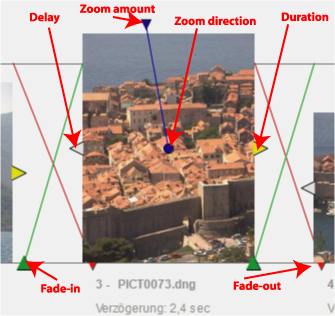

Slide show designer view
With the slide show designer view you can create individually
designed slide shows. Slides are placed on a storyboard and can be
arranged in sequence. Duration and fading behavior can be configured individually for each slide.
In the top area of the Slide show
designer view features the storyboard. Simply place images on the
storyboard by dragging them from a gallery to the storyboard. By pressing Ctrl
when dragging images over an existing storyboard image the new images will
replace the storyboard image. Otherwise they are simply added to the storyboard.
Per drag
& drop you may rearrange the images freely. Images can be
removed from the storyboard
by dragging them over the top border of the view.
A right click on a slide selects the associated image in other views such as galleries.
Each slide is equipped with four handles:
- At the left border is a gray handle. This
handle allows adjusting the delay between the previous slide and the
current slide.
- The yellow
handle at the right border is used for adjusting the display
duration of the slide.
- The green
handle at the baseline left determines the fade-in time.
- The red
handle at the baseline right determines the fade-out time.
- The blue handle
at the top determines the amount of zooming during the display
duration. The maximum zoom amount will cause a zoom-in by factor
2. When a zoom amount greater zero is defined, a blue dot in the image determines the zoom direction. It can be dragged to any position within the image.

The title of each slide is editable. Simply click on the title area.
Below the storyboard is a time axis. By clicking on the time axis you can set a different start point for the show.
Local menu functions and tool buttons
- Play (
 ).
Start to play the slide show. The player
is interactive and allows changing image properties while playing.
).
Start to play the slide show. The player
is interactive and allows changing image properties while playing.
- Slideshow
Properties (). Allows editing the global properties of the
slide show (see below).
- Synchronize (
 ). Toggles synchronization mode. If this mode is set the selected image will be shown in the current collection (if present), too.
). Toggles synchronization mode. If this mode is set the selected image will be shown in the current collection (if present), too.
Navigation
Navigation is similar to the Sleeves view.
Just drag the whole area to pan. Make sure that the cursor is not positioned on a slide when starting dragging. Ctrl
accelerates the panning operation. All other modification keys (except
the zoom key, see below) can be used to force panning, even is the
cursor is positioned on a slide. The panning is restricted to the horizontal direction. By pressing Shift+Ctrl you can override that restriction and pan in the vertical direction, too.
You
can adjust the viewing distance by pressing the zoom key (ALT or Shift key or the right mouse button depending on the preference settings) and
dragging left or right.Alternatively, you
may zoom using the mouse wheel.
ALT-click on the slide or a click on the legend opens the property dialog.
Slide show properties
- Name. The name of the slide show.
- Description.
Name and description will be show at the start of the slide show.
- Use preview
images where possible.
This can be useful for slow machines when displaying RAW files. If the
preview image in the RAW file is large enough it will be used.
Otherwise, or if this option is switched off, the RAW file is converted
into a displayable file format. This happens in the background while
the previous slide is displaying but it could slow down the display
process and cause flicker.
- Skip duplicates. This
option is only available for Adhoc Slides shows. When checked,
duplicate images (images with the same image name) are skipped.
- Voice notes. Mark this option if you want to replay attached voice notes.
- Default timing for slides
- Duration.
This is the display duration when an image is added to the storyboard.
- Transition.
This is the default transition time (fade-in and fade-out) for new images added to the
storyboard.
- Title
display. This is the display time for all titles. Set this
value to 0 if you don't want titles to be displayed.
- Content. Select what to show in the title display: the image caption, the slide sequence number, or both.
Slide
properties
To
edit the slide properties in a
separate dialog just click the
slide legend or ALT-click into the image area.
Context menu
To
obtain the context menu, right click a slide or the time bar. The
following functions are available:
- Set time cursor. Sets the current start point for the slide show.
- Jump to image. Jumps to an image selected from a list.
- Jump to section. Jumps to a section break selected from a list.
- Jump to last selected. Jumps to the image that was most recently selected.
- Jump to time cursor. Jumps to the current position of the time cursor.
- View image fullscreen. Shows the image in full resolution.
- Modify. Edit or rotate the image.
- Cut. Removes the selected images from the exhibition but keeps them in the application clipboard.
- Paste. Pastes images from the clipboard to the mouse position.
- Show folder. Shows the selected image in its file system folder.
- Show in timeline. Shows the selected image in its timeline collection.
- Show in map. Shows the selected image in the map view (only with geo-coded images)
- Play voice note. Plays the voicenote attached to the image, if any.
- Create section break. Creates
a new section break.
Tip
A convenient way to create a slideshow is to start with an Adhoc
slideshow. When the slideshow has ended you have the opportunity to
save the slide show under a name. Then you can edit this slideshow.